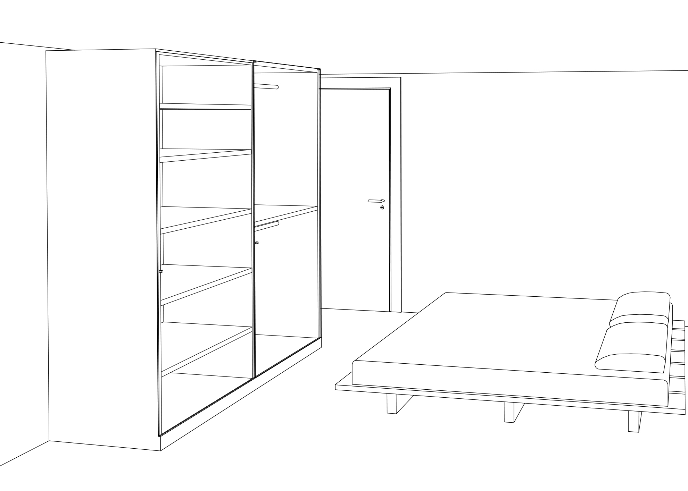
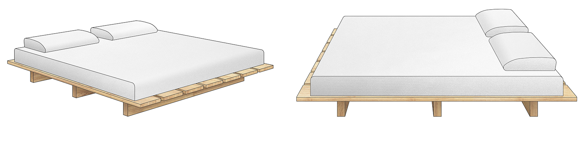

Camera da letto

Vista tridimensionale della camera da letto. Il letto, che ricorda nella struttura il fouton giapponese, è posto al centro della parete nord; di fronte vi è posizionato uno spazioso armadio a due ante in rovere e vetro.
Il particolare tono caldo del rovere e la trasparenza del vetro utilizzate per l’arredamento degli ambienti al piano superiore della suite, creano un’atmosfera armonica e pacata in netto contrasto con i toni forti e decisi dell’ambiente cucina-sala da pranzo.
